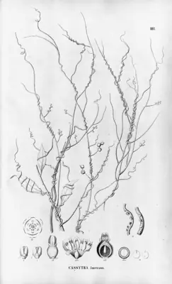

pranet · 出典付きの植物図鑑
スナヅル ☠
Cassytha filiformis L. · Lauraceae

スナヅル（砂蔓）は、クスノキ科スナヅル属に分類されるつる性寄生植物の1種 またはその基準変種 のことである。緑色からオレンジ色の細長い茎が宿主の植物に巻きつき、寄生根（吸器）を付着させて侵入し、水や栄養分を吸収するが、自身で光合成も行う。葉は鱗片状に退化し、典型的な根も発芽後すぐに消失する。立ち上がった柄に複数の白い花がつき（図1）、果実は肉質になった花托で包まれる。宿主特異性は低く、さまざまな植物に寄生する。世界中の熱帯域から亜熱帯域の特に海岸付近に分布しており、日本では鹿児島県佐多岬から南西諸島、小笠原諸島で見られ、高知県からも報告されている。和名の「スナヅル」は、砂地に生えるつる植物の意味である。
出典: Wikipedia 日本語版「スナヅル」 · CC BY-SA 4.0
異名: Calodium cochinchinense Lour., Calodium cochinchinensis Lour., Cassytha americana Nees, Cassytha aphylla Raeusch., Cassytha archboldiana C.K.Allen, Cassytha brasiliensis Mart. ex Nees, Cassytha corniculata Burm.f., Cassytha cuscutiformis Meisn., Cassytha dissitiflora Meisn., Cassytha guineensis Schumach. & Thonn., Cassytha lifuensis Guillaumin, Cassytha macrocarpa Guillaumin, Cassytha novoguineensis Kaneh. & Hatus., Cassytha paradoxae Proctor, Cassytha senegalensis A.Chev., Cassytha timoriensis Gand., Cassytha zeylanica Gaertn., Rumputris fasciculata Raf., Spironema aphylla Raf., Volutella aphylla Forssk.
同定や利用は自己責任でお願いします。この図鑑だけを根拠に野生の植物を食べないでください。
出典
- 学名: World Flora Online Plant List 2026-06 · CC0 1.0
- 名前: Wikipedia の記事名と Wikidata · CC0 1.0（Wikidata）。記事名は事実
- 説明: Wikipedia 日本語版「スナヅル」 · CC BY-SA 4.0
- 食用・毒性: World Checklist of Useful Plant Species (Diazgranados et al. 2020, RBG Kew) · CC BY 4.0
- 分布: World Checklist of Vascular Plants (WCVP), RBG Kew, version 2026-06-04 · CC BY 3.0
このページは pranet のデータから自動生成しています。コードは MIT、データは項目ごとのライセンス（説明）。